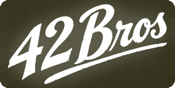

Radio · Off air
WWII Roleplay · 1942
Welcome to
42Bros
WWII OccupationRP!
Serve the Reich, join the Resistance, or keep your head down and make a living. Every side has a part to play.
Connecting…
Bulletin
Discord
Waiting for the server…
0%